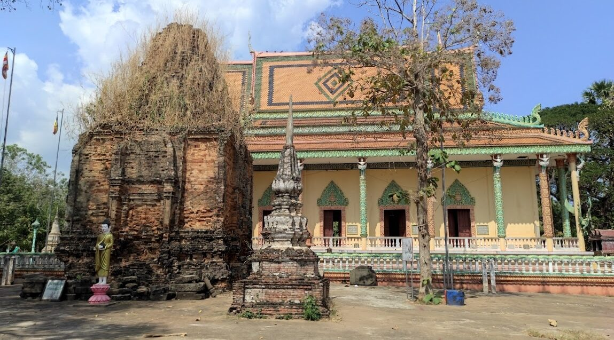

Kampong Cham is one of the most highly-populated provinces in Cambodia and most likely the province with the most fertile land as well. The soil is mostly red in colour. Tobacco, soya-beans, rubber and other tropical produce are grown and exported from here.
The charming city of Kampong Cham is the best place to get a feel of the “real” Cambodia. While remnants of French colonial rule remain, modern developments have done quite a bit to give the city a more contemporary look. However, the real charm of Kampong Cham lies with its people: hospitable, happy-go-lucky folks who are welcoming to tourists.
The Kizona, the longest bridge built across the Mekong River, connects the country's northeastern regions to the city. Kampong Cham also has its fair share of captivating 12th Century temples. The Nokor Ba Chey, the Han Chey and the Phnom Pros-Phnom Srei are all worth a visit.
